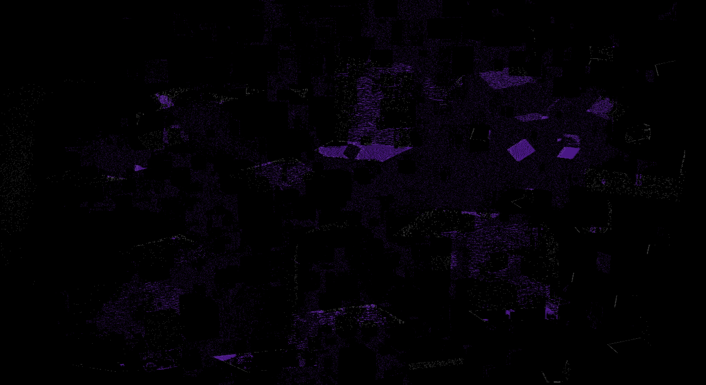

Voidverse Backgrounds

The Crimson Maw of The Void
A terrifying, blood-red expanse within the Voidverse, said to be the gaping maw of an ancient cosmic entity. Its swirling patterns evoke a sense of endless hunger and dread.

The Shattered Abyss
A fractured realm of floating debris and broken realities, where the boundaries of space and time are torn asunder. The Shattered Abyss is a place of chaos and lost memories.

The Crucible of Endless Agony
A searing, crimson landscape where pain and suffering are woven into the very fabric of existence. The Crucible is feared even by the denizens of the Voidverse for its relentless torment.